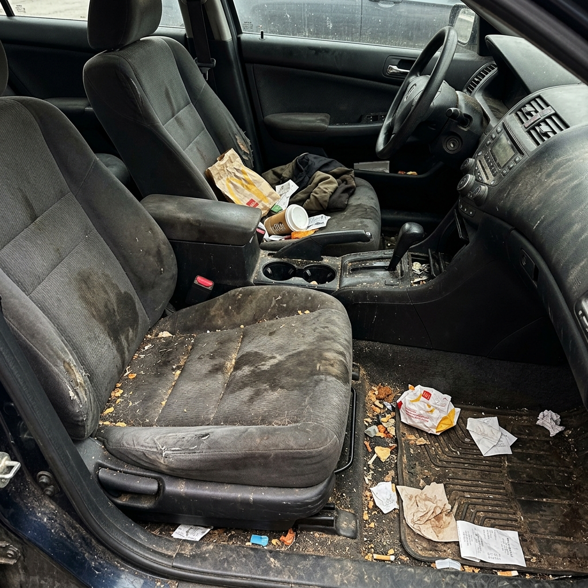
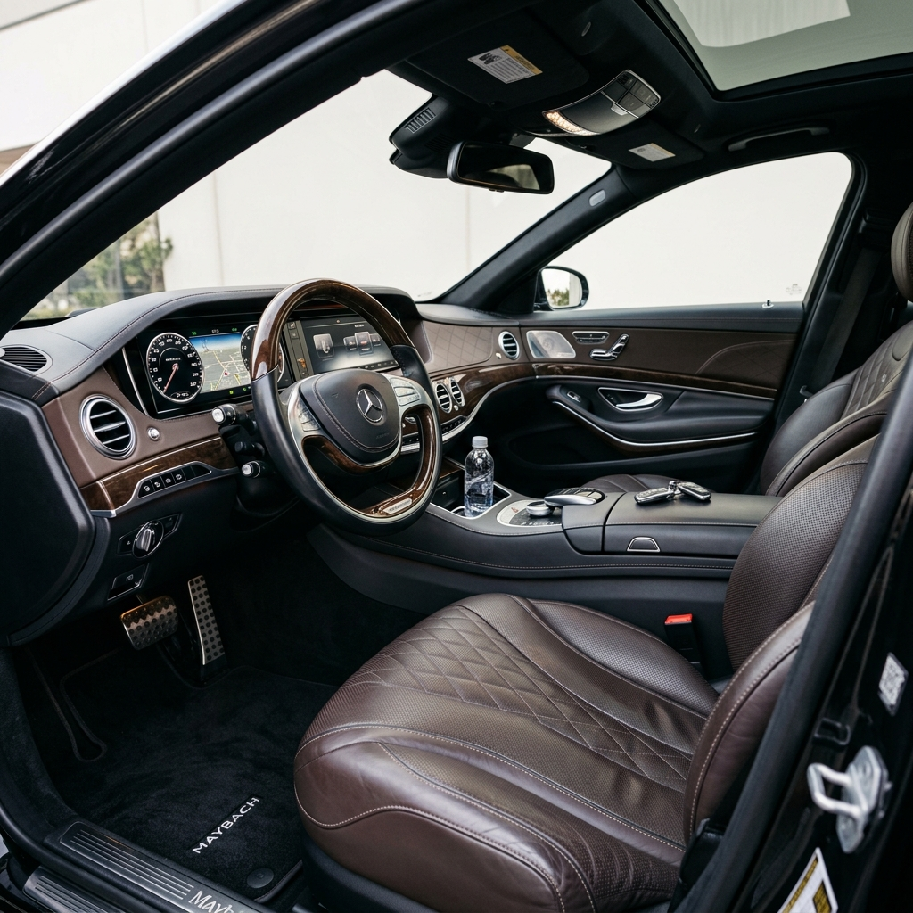

Wir machen Schluss mit dem Chaos. Unser "Auto Ausmisten" Service geht weit über einfaches Staubsaugen hinaus. Wir bringen Ordnung, Sauberkeit und Frische zurück in Ihren Innenraum – egal wie hart der Alltag zugeschlagen hat.
Wir entfernen Müll und sortieren lose Gegenstände. Auf Wunsch packen wir Wichtiges in praktische Boxen.
Porentiefe Reinigung aller Polster, Teppiche und Verkleidungen mit speziellen Extraktionsgeräten.
Reinigung und Versiegelung von Armaturenbrett, Mittelkonsole und Türtafeln für einen matten Neuwagen-Look.
Optionale Ozonbehandlung zur Beseitigung hartnäckiger Gerüche wie Rauch oder Tiergeruch.
Ja, wir sind spezialisiert auf die Entfernung von Tierhaaren. Dies erfordert jedoch einen zeitlichen Mehraufwand.
Dank moderner Extraktionstechnik ist der Innenraum nach etwa 2-4 Stunden wieder vollständig trocken.


Sichern Sie sich jetzt Ihren Termin für eine professionelle Innenraumaufbereitung.
Jetzt Termin anfragen